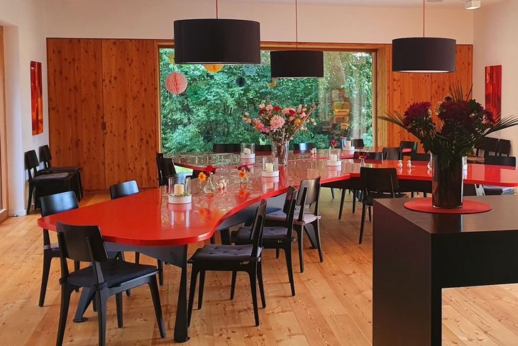

Viele Menschen stellen sich unter einem Elternhaus eine Art Hotel vor. Ein schönes Gebäude, in dem Eltern übernachten können, während ihre Kinder in der Klinik behandelt werden. Tatsächlich ist es viel mehr als das.
Wenn Eltern zum ersten Mal ankommen, ist ihre Welt meist gerade zusammengebrochen. Eben noch führten sie ein ganz normales Leben. Wenige Stunden später haben sie erfahren, dass ihr Kind an Leukämie erkrankt ist, einen Hirntumor hat oder viel zu früh geboren wurde. Manche sprechen kaum ein Wort. Andere sitzen einfach nur da und starren vor sich hin. Niemand weiß in diesem Augenblick, wie es weitergehen soll. Genau deshalb funktioniert das Elternhaus so gut.
Denn dort wohnen nicht nur Eltern, die gerade angekommen sind. Dort leben auch Familien, deren Kinder schon seit Wochen oder Monaten behandelt werden. Sie wissen inzwischen, wie der Alltag aussieht, welche Hoffnungen berechtigt sind und welche Ängste fast alle Eltern durchmachen. Ohne dass jemand sie darum bittet, setzen sie sich zu den Neuankömmlingen, erzählen ihre Geschichte und geben ihnen etwas zurück, was Ärzte und Pflegekräfte oft nur begrenzt vermitteln können: die Erfahrung, dass das Leben trotz allem weitergehen kann. Diese gegenseitige Unterstützung war von Anfang an Teil unseres Konzepts.

Deshalb gibt es im Elternhaus auch keine kleinen Zweiertische, an denen jede Familie für sich bleibt. Die Küche, das große Wohnzimmer und die Gemeinschaftsräume laden dazu ein, miteinander ins Gespräch zu kommen. Draußen kann gemeinsam gegrillt werden. Für Geschwisterkinder gibt es Spielmöglichkeiten. Es gibt einen Raum der Stille für die schweren Stunden, aber ebenso viele Orte, an denen wieder gelacht werden darf.
Hinzu kommt etwas, das mich bis heute beeindruckt. Viele Menschen engagieren sich dort völlig ehrenamtlich. Sie kümmern sich um den Garten, helfen im Haus, organisieren Veranstaltungen oder kochen für die Eltern. Und dann gibt es noch einen Berliner Hotelier, der seit Jahren jeden Donnerstag ein besonderes Essen liefert. Für viele Familien ist dieser Abend ein kleines Highlight in einer Zeit, in der es sonst nur um Untersuchungen, Operationen und Chemotherapie geht. Das Elternhaus wurde dadurch zu einer eigenen kleinen Gemeinschaft.
Mit den Jahren zeigte sich außerdem, dass das Haus nicht nur den Familien half, sondern auch der Klinik selbst. Damals hatte unser Geschäftsführer Christian Straub den Bau des Elternhauses eher als notwendiges Übel betrachtet. Die Klinik musste das Grundstück zur Verfügung stellen und die Erschließung bezahlen. Für ihn waren das vor allem zusätzliche Kosten. Dass daraus einmal einer der größten Standortvorteile der Klinik entstehen würde, konnte oder wollte er damals nicht erkennen.
Schon kurze Zeit nach der Eröffnung stiegen die Patientenzahlen deutlich an. Besonders in der Kinderonkologie und in der Neonatologie. Gerade für Mütter frühgeborener Kinder war das Elternhaus ein großer Gewinn. Sie mussten keine Zimmer im Krankenhaus mehr belegen und konnten trotzdem jederzeit bei ihren Kindern sein. Dadurch wurden auf den Stationen zusätzliche Kapazitäten frei.
Noch wichtiger war jedoch etwas anderes. Eltern informieren sich heute sehr genau, in welche Klinik sie mit ihrem schwer kranken Kind gehen. Wenn sie erfahren, dass sie monatelang fast kostenlos in unmittelbarer Nähe ihres Kindes wohnen können und dort gleichzeitig Unterstützung durch andere Familien finden, ist das für viele ein entscheidendes Argument.
Was Christian Straub zunächst für einen Kostenfaktor gehalten hatte, entwickelte sich zu einem der größten Pluspunkte der gesamten Klinik. Ich habe das Elternhaus immer als einen zweiten therapeutischen Ort verstanden. Nicht für die Kinder, sondern für ihre Eltern.
Wie wichtig das war, wurde mir auf schmerzliche Weise bewusst, als dort auch die Mutter eines kleinen Mädchens einzog. Ihr Name war Celine.